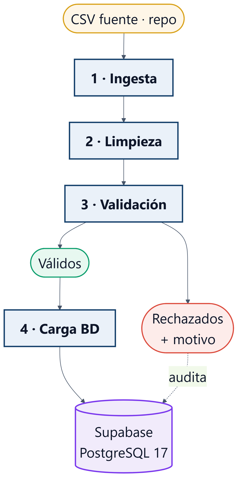

Sin datos de calidad no hay modelo de IA que funcione: el pipeline es el cimiento.
1.869 de 7.043 clientes abandonaron.
Cada uno = ingresos recurrentes perdidos.
| Dimensión | Enfoque tradicional | DataOps (nuestro proyecto) |
|---|---|---|
| Procesamiento | Excel manual, copy-paste | Scripts automatizados (4 etapas) |
| Errores | Invisibles, se detectan tarde | Validación explícita + registro de rechazos |
| Reproducibilidad | "Funciona en mi PC" | Docker + carga idempotente |
| Trazabilidad | Sin historial | Cada ejecución auditada en BD |
| Despliegue | Local, frágil | Cloud (Railway + Supabase), API pública |
DataOps = sistema reproducible, observable y colaborativo — no solo "correr un script".
data/source/healthclientes · carga_logsclientes_rechazadosTres servicios independientes: si Railway cae, la BD sigue; se escala la API sin tocar los datos.

Cada etapa es un endpoint REST independiente:
POST /pipeline/ingestPOST /pipeline/cleanPOST /pipeline/validatePOST /pipeline/loadPOST /pipeline/run — orquesta las 4Requisitos fijos, dependencias claras
→ cronograma, hitos, Carta Gantt
Exploratorio, iterativo
→ ciclos cortos, revisión cruzada
Cascada pura sería rígida; ágil pura, caótica para las dependencias. El híbrido planifica lo estable e itera lo incierto. Seguimiento con Trello.
data/raw/ con sello temporal, sin transformarlo.shutil + pandas), logging con conteo de filas.Ingesta por lotes (batch), no streaming: el dato es un CSV estático → Kafka sería sobreingeniería.
Dataset versionado en el repo → reproducible y sin dependencias externas en la demo.
TotalCharges venía como texto con vacíos → a numérico, imputando 0 a clientes con tenure=0.tenure_group (5 rangos).customerID.Se trabaja sobre copia, nunca sobre el crudo. La limpieza normaliza; no decide qué es válido (eso es la etapa 3).
panderatenure 0–100)customerIDInternetService=No → servicios = "No internet service"PhoneService ↔ MultipleLinesTotalChargesdata/validated/. Inválidos → data/rejected/ con su motivo, auditados en la tabla clientes_rechazados.TRUNCATE + insert en una transacción → reejecutar da siempre el mismo estado.ROLLBACK.carga_logs (nunca se trunca).Conexión caída → estado "ERROR" en log · violación de constraint → rollback · inválidos → separados y auditados, nunca descartados en silencio.
| KPI | Umbral de alerta |
|---|---|
| Latencia total | > 30 s |
| Tasa de validez | < 95% |
| Completitud por columna | < 95% |
| Volumen procesado | < 5.000 |
| Estado de ejecución | ≠ OK |
Persistidos en carga_logs y expuestos por la API:
GET /kpis/resumenGET /kpis/last
En producción → Grafana / alertas.
Ejecutamos POST /pipeline/run → carga 7.043 clientes en Supabase · luego GET /kpis/resumen y GET /rechazados.
churn.tenure, Contract, MonthlyCharges.clientes en Supabase ya queda lista como fuente de entrenamiento para el modelo de IA.